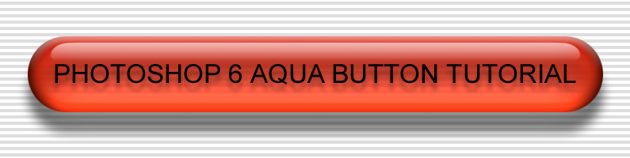
1) Create the Background
Create a new document (click on File, New) of dimension 1024 by 768 pixels. Use 96 pixels per inch, RGB mode, and make the contents=White.
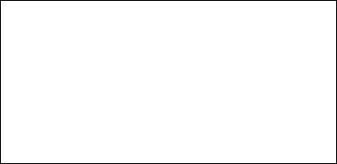
2) Create a Single Horizontal Line Shape Channel
Create a new channel in the Channels palette. Name the channel, "Single Line Shape".
Set the foreground color to white (RGB=255,255,255).
- Select the Line Tool, and in the Options bar, click the Create Filled Region button, with
- Weight=4 pixels,
- Mode=normal,
- Opacity=100%, and
- uncheck Anti-aliased box.
Draw a horizontal line across entire image (hold down shift key to lock the vertical position as you draw line).
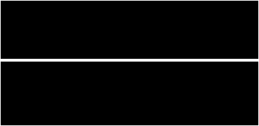
3) Define a Horizontal Line Pattern
- Select the Rectangular Marquee Tool, and in the Options bar, set to:
- New Selection mode,
- Feather=0 pixels,
- Style=fixed size,
- Width=1024 pixels, and
- Height=8 pixels.
- Place selection such that the line and 4 pixels below it are selected.
- Click on Edit, Define Pattern, OK
De-select (Ctrl-d).
4) Create Horizontal Lines Shape Channel
Create a new channel in the Channels palette. Name the channel, "Horizontal Lines Shape".
Click on Select, All.
- Click on Edit, Fill, and then select:
- Mode=normal,
- Opacity=100%,
- Use=Pattern,
- choose the pattern that was just created, and
- click OK.
Load the channel as a selection.
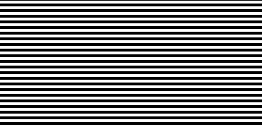
5) Apply Horizontal Lines to Image
Create a new layer in the Layers palette. Name the layer, "Horizontal Lines".
- Set the foreground color to black (RGB=0,0,0).
- Click on Edit, Fill, and then select:
- Use=Foreground Color,
- Blending Mode=normal,
- Opacity=100%, and
- click OK.
De-select (Ctrl-d).
For the layer, set to Opacity=13% and Blending Mode=normal.
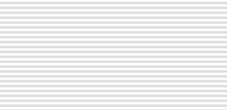
6) Create Button Shape Channel
Create a new channel in the Channels palette. Name the channel, "Button Shape".
- Select the Rectangular Marquee Tool, and in the Options bar, set to:
- New Selection mode,
- Feather=0 pixels,
- Style=fixed size,
- Width=215 pixels, and
- Height=96 pixels.
Create a rectangular selection roughly in the center of the channel.
- Click on View, Show Rulers.
- Click on View, Snap (to turn on Snap option).
- Drag a Guide from the top ruler to coincide with the top of the rectangular selection (it should snap there).
- Drag a Guide from the top ruler to coincide with the bottom of the rectangular selection (it should snap there).
- Drag a Guide from the left ruler to coincide with the left side of the rectangular selection (it should snap there).
- Drag a Guide from the left ruler to coincide with the right side of the rectangular selection (it should snap there).
Click on View, Snap To, Guides (to turn on Snap-to-Guides option).
- Select the Elliptical Marquee tool, and in the Options bar, set to:
- Add to Selection mode,
- Feather=0 pixels,
- check the Anti-aliased box,
- Style=fixed size,
- Width=96 pixels, and
- Height=96 pixels.
Click somewhere on channel and, while holding down the mouse button, drag a circle selection to the left side of the rectangular selection such that it snaps to fit vertically within the top and bottom guides and is as closely centered on the left guide as possible.
Click somewhere on channel and, while holding down the mouse button, drag a circle selection to the right side of the rectangular selection such that it snaps to fit vertically within the top and bottom guides and is as closely centered on the right guide as possible.
- Click on View, Snap (to turn off Snap option).
- Click on View, Snap To, Guides (to turn off Snap-to-Guides option).
- Select Move Tool, and drag all guides off the channel.
- Click on View, Hide Rulers.
- Set the foreground color to white (RGB=255,255,255).
- Click on Edit, Fill, and then select:
- Use=Foreground Color,
- Blending Mode=normal,
- Opacity=100%, and
- click OK.
Load the channel as a selection.
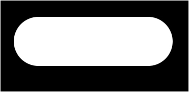
7) Choose and Apply Button Color
Create a new layer in the Layers palette. Name layer, "Button".
- Set the foreground color to the preferred button color. Some colors to try:
- Blue (RGB=65,113,166) (hex=#4171A6)
- Red (RGB=206,49,16) (hex=#CE3110)
- Butternut Yellow (RGB=245,168,41) (hex=#F5A829)
- Click on Edit, Fill, and then select:
- Use=Foreground Color,
- Blending Mode=normal,
- Opacity=100%, and
- click OK.
De-select (Ctrl-d).
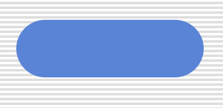
8) Apply Inner Shadow
Click on Layer, Layer Style, Inner Shadow.
- Set:
- Blend Mode=soft light,
- Opacity=54%,
- uncheck the Use Global Light box,
- Angle=-90 degrees,
- Distance=2 pixels,
- Choke=0 pixels,
- Size=6 pixels,
- uncheck Anti-aliased box,
- Noise=0%, and
- click OK.
9) Apply Bevel and Emboss
Click on Layer, Layer Style, Bevel and Emboss.
- Set:
- Style=inner bevel,
- Technique=smooth,
- Depth=18%,
- Direction=up,
- Size=11 pixels,
- Soften=6 pixels,
- uncheck the Use Global Light box,
- Angle=90 degrees,
- Altitude=62 degrees,
- uncheck Anti-aliased box,
- Highlight Mode=normal,
- Opacity=100%,
- Shadow Mode=Multiply,
- Opacity=100%, and
- click OK.
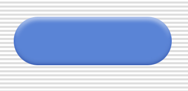
10) Apply Satin Finish
Click on Layer, Layer Style, Satin.
- Set: Blend Mode=normal,
- Opacity=63%,
- Angle=-180 degrees,
- Distance=9 pixels,
- Size=24 pixels,
- uncheck Anti-aliased box,
- uncheck Invert box, and
- click OK.
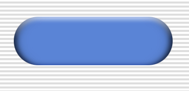
11) Apply Gradient Overlay
Click on Layer, Layer Style, Gradient Overlay.
- Set:
- Blend Mode=soft light,
- Opacity=100%,
- Gradient to the transparent smooth gradient,
- check the Reverse box,
- Style=linear,
- check the Align With Layer box,
- Angle=90 degrees,
- Scale=100%, and
- click OK.
12) Adding Button Drop Shadow
Go to the Button layer.
- Click on Layer, Layer Style, Drop Shadow.
- Set:
- Blend Mode=normal,
- Opacity=55%,
- Distance=25 pixels,
- Spread=0 pixels,
- Size=15 pixels,
- uncheck Use Global Light box,
- Angle=90 degrees, and
- click OK.
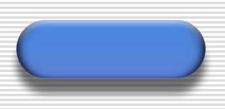
13) Create a Color Dodge Shape Selection
- Go to the Button Shape channel in the Channels palette. Load the channel as a selection.
- Click on Select, Modify, and Contract 10 pixels.
- And again, click on Select, Modify and Contract 10 pixels.
- Click on Select and Feather 10 pixels.
- Click on Select, Transform Selection.
- Click on the Use Relative Positioning for Reference Point button to turn on that option.
- Enter y=+40 pixels.
- Click on the check-mark box to accept.
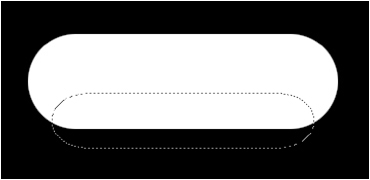
14) Create a Color Dodge Layer
- Click on Layer, New, and Layer....
- Name the layer, "Color Dodge".
- Set: Color=none,
- Mode=color dodge,
- Opacity=100%,
- check the Fill with Color-Dodge-neutral color (black) box to enable it, and
- click OK.
- Set the foreground color to white (RGB=255,255,255).
- Click on Edit, Fill, and then select: Use=Foreground Color, Blending Mode=normal, Opacity=100%, and
- click OK.
By right-clicking on the Color Dodge layer, select Blending Options, and set the Fill Opacity value to 35% (the layer opacity remains at 100%).
Click on Filter, Blur, Gaussian Blur, and Radius=10 pixels.
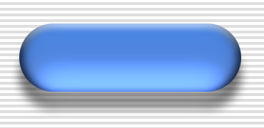
15) Apply a Button-Shaped Mask to Protect Background
Go to the Button Shape channel in the Channels palette. Load channel as a selection.
In the Layers palette (with Color Dodge layer selected), click on the Add a Mask button.
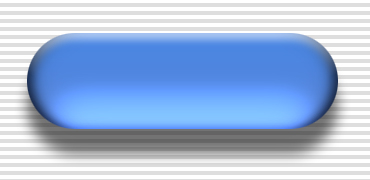
16) Apply Transparency Mask to Button Layer
- Go to the Button layer in the Layers palette.
- Click on the Add a Mask button.
- Go to the Button Shape channel in the Channels palette. Load channel as a selection.
- Click on Select, Modify, and Contract 10 pixels.
- And again, click on Select, Modify, and Contract 10 pixels.
- Click on Select and Feather 10 pixels.
- Click on the mask in the Button layer.
- Set the foreground color to grey (RGB=166,166,166).
- Click on Edit, Fill, and then select:
- Use=Foreground Color,
- Blending Mode=normal,
- Opacity=100%, and
- click OK.
- Click on Filter, Blur, Gaussian Blur, and Radius=20 pixels.
- De-select (Ctrl-d).
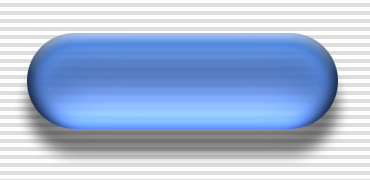
17) Create a Highlight Channel
- Select the Rectangular Marquee Tool, and on the Options bar, set:
- Mode=new selection,
- Feather=0 pixels,
- Style=fixed size,
- Width=280 pixels, and
- Height=25 pixels.
- Go to the Button layer in the Layers palette.
- Place a rectangular selection on the button so that it is centered and about three-quarters of the way to the top of the button. The selection box should slightly over-hang the button at the top-left and top-right.
- Create a new channel in the Channels palette. Name the channel, "Highlight".
- Click on Edit, Transform, Skew.
- While holding down the Ctrl-Shift-Alt keys to ensure symmetry, drag the top-right anchor to the left so that the edge of the selection tilts at about 45 degrees.
- Click on the check-mark box to accept.
- Set the foreground color to white (RGB=255,255,255).
- Click on Edit, Fill, and then select:
- Use=Foreground Color,
- Blending Mode=normal,
- Opacity=100%, and
- click OK.
Click on Select, Modify, and Expand by 1 pixel.
Click on Filter, Blur, Gaussian Blur, Radius=10 pixels, and click OK.
Click on Image, Adjust, Levels, set the Input Levels to (120,1,132), and click OK.
Click on Select, Modify, and Expand by 1 pixel.
Set the foreground color to black (RGB=0,0,0).
Click on Edit, Stroke, set to 2 pixels, Inside, Normal mode, Opacity=100%, uncheck Preserve Transparency, and click OK.
Load channel as selection.
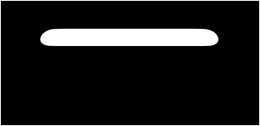
18) Create a Highlight Layer
- Create a new layer in the Layers palette. Name the layer, "Highlight".
- Reset foreground and background colors to black and white, respectively (press, "D").
- Zoom in to the center of the highlight selection so that it takes up a large part of the screen.
- Click on View, Snap (to turn on Snap option).
- Select the Gradient Tool, and in the Options bar, set to:
- Mode=normal,
- Opacity=100%,
- uncheck Reverse box,
- check Dither box, and
- check Transparency box.
Draw a line from the bottom of the highlight to the top of the highlight (hold down shift key to lock the horizontal position as you draw line).
Set Highlight layer to Mode=screen, and Opacity=65%.
De-select (Ctrl-d).
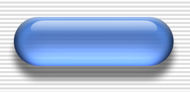
19) Adding a Text Layer
- Select the Text Tool, and in the Options bar, set:
- Font Family=Arial,
- Font Style=regular,
- Font Size=25 pt, and
- Anti-aliasing Method=crisp.
- Type the desired text (don't worry about centering it yet).
- Click the check-mark box to accept.
- Click on Layer, Rasterize, Layer.
- Name the layer, "Text".
Go to Button Shape channel in Channels palette. Load channel as selection.
Go to the Text layer in the Layers palette.
Click on Layer, Align To Selection, and then Vertical Centers.
Click on Layer, Align To Selection, and then Horizontal Centers.
De-select (Ctrl-d).
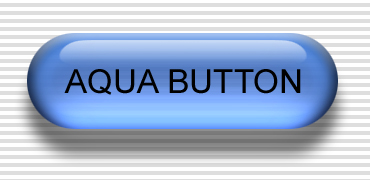
20) Cylindricizing Text Layer (not usually done)
Go to Button Shape channel in Channels palette. Load channel as selection.
Go to the Text layer.
- Click on Filter, Distort, Spherize.
- Set Mode=vertical only, adjust distortion Amount to desired value, and click OK.
21) Adding a Drop Shadow to Text Layer
- Click on Layer, Layer Style, Drop Shadow.
- Set:
- Blend Mode=normal,
- Opacity=30%,
- uncheck the Use Global Light box,
- Angle=90 degrees,
- Distance=10 pixels,
- Spread=0 pixels,
- Size=6 pixels,
- uncheck the Anti-aliased box,
- Noise=0%,
- check the Layer Knocks Out Drop Shadow box, and
- click OK.
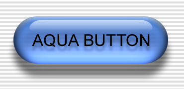
P. David Buchan pdbuchan@gmail.com